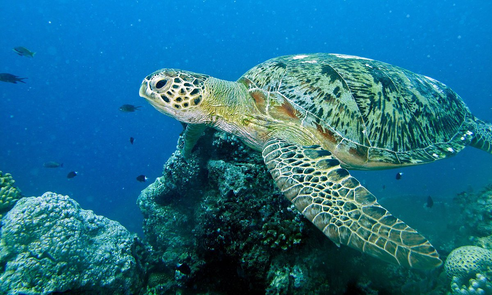

Scientific classification
- Kingdom: Animalia
- Phylum: Chordata
- Class: Reptilia
- Family: Cheloniidae
Species Description
- Adult weight: 136-199kg
- Adult size: 0.9-1.2m
- Appearance: rounded head, greenish-black coloration, smooth domed carapace with teardrop shape.
- Diet: Seagrasses, mangrove leaves and shoots, jellyfish and algue.
Life cycle
- Natural Lifespan: 60-90 years
- Age at sexual maturity: 20-50 years
- Average clutch size: 70-200 eggs
- Average clutches per season: 3-9 clutches
- Nest Incubation period: 45-75 days
- Remigration interval: 2-4 years